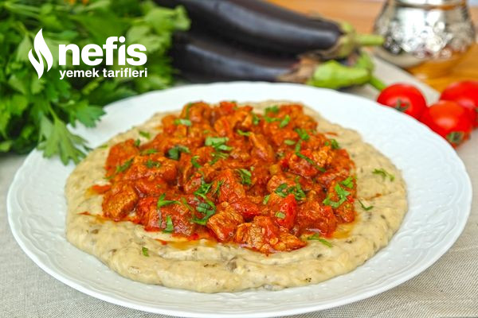

Hünkar Beğendi

Açıklama
Yapılışını izlerken canınızın çekeceği hünkar beğendiyi ben beğendim, eminim ki sizde beğeneceksiniz. Patlıcan yatağında kuşbaşı etlerle size eşsiz lezzetler yaşatacak hünkar beğendi vazgeçilmeziniz olacak. Ana yemeğiniz için uygun bir lezzet olan hünkar beğendiyi yapmak çok zor değil. Saray dönemlerinden bize miras kalan bu yemek tamda sizin ağzınıza layık. Arkasında hüzünlü bir aşk hikayesi saklayan yemek hikayesinin tam tersine mutlu edecek sizleri. Tarifimi denemeyi ve defterinize eklemeyi unutmayın. Deneyeceklere şimdiden afiyet olsun.
Malzemeler
- 200g kuşbaşı et
- 3 yemek kaşığı sıvı yağ
- 1 adet soğan
- 1 adet biber
- 1 adet domates
- Yaklaşık 1 yemek kaşığı salça
- 1,5-2 su bardağı su
- Tuz, karabiber
Yapılışı
- İlk olarak patlıcanlar fırında ya da ocakta közlenir. (Ben kemer patlıcan kullandığım için beğendi çekirdekli oldu. Siz mümkünse çekirdeksiz patlıcan kullanın)
- Közlenen patlıcanlar kabuğu soyulup doğranır.
- Beğendisi için tavada yağ ve un karıştırılarak kavrulur.
- Patlıcanlar tavaya eklenir ve iyice ezilerek karıştırılır.
- Ocağın altı iyice kısılarak süt yavaş yavaş karıştırarak patlıcana ilave edilir. İyice karıştırılır.
- Son olarak tuz ve ardından kaşar peynirini rendesi eklenir, karıştırılır ve ocak kapatılır.
,
- Kaşar da tamamen karıştırılarak beğendi hazırlanır.
- Ayrı bir tava yağ ile ocağa konur. Tava ısındığında etler ilave edilir. Etler suyunu bırakıp çekene kadar kavrulur.
- İnce doğranmış soğan ve biberler eklenir, kavurmaya devam edilir.
- Onlar da kavrulunca salça eklenip karıştırılır.
- Salçadan sonra çekirdekleri alınıp doğranmış domates eklenir.
- 1,5-2 su bardağı sıcak su da göz kararı eklenerek kapağı kapatılıp etler pişene kadar pişirilir.
- Piştikten sonra tuzu karabiberi eklenir, karıştırılır. Ocağın altı kapatılır. (Eğer etiniz geç pişecek bir et ise düdüklüde haşlayıp yapabilirsiniz. Su yerine et suyunuzu ilave edip pişirirseniz de aynı tadı elde edersiniz.)
- Servis tabağınıza önce beğendiyi üstüne de etinizi koyarak servis edebilirsiniz.